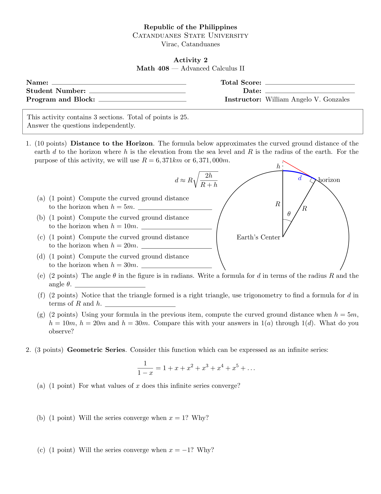
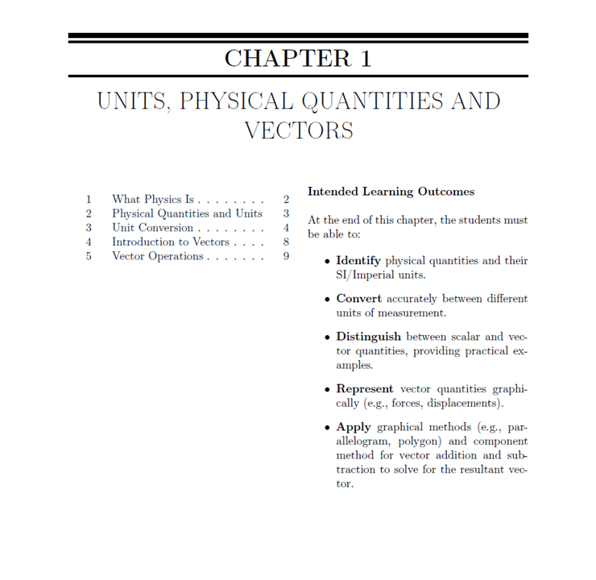

Welcome & Informed Consent
Dear Mathematics Teachers,EXPLORING THE ADOPTION OF LaTeX AMONG HIGH SCHOOL MATHEMATICS TEACHERS IN CATANDUANES: A UNIFIED THEORY OF ACCEPTANCE AND USE OF TECHNOLOGY MODEL-BASED STUDY . This study aims to understand factors influencing the adoption of LaTeX among high school mathematics teachers. Whether you are a regular LaTeX user, have tried it once, or have never used it, your perspectives are valuable.
Participation is voluntary. Your responses are anonymous and will be used solely for academic research purposes. This survey will take approximately 10–15 minutes to complete.
WILLIAM ANGELO V. GONZALESResearcher
📄 View Official DepEd Division Approval Permit
Division of Catanduanes Approval Letter Preview:
I confirm that I am a High School Mathematics Teacher in Catanduanes and agree to participate in this study.
Proceed to Part I →
Part I: Demographic and Background Information
Please provide the following information by selecting the appropriate option or filling in the blank space.
1. Respondent Name (Optional):
4. Age:
7. Years Teaching Mathematics:
9. Years of Experience in Creating Mathematics Instructional Materials:
16. Regarding the method you selected in Question 15, how much difficulty do you typically experience with the following aspects of mathematics document preparation?
Scale Key: 1 = Very Low, 2 = Low, 3 = Moderate, 4 = High, 5 = Very High
16a. Writing or typing basic mathematical expressions (e.g., fractions, exponents, subscripts, square roots).
ⓘ
💡 Clarification: Difficulty in inserting and typing standard mathematical notation like fractions, exponents, or square roots in your primary tool.
1 - Very Low 3 - Moderate 5 - Very High
16b. Achieving precise vertical alignment of equal signs across multiple steps of a solution.
ⓘ
💡 Clarification: Difficulty in aligning consecutive lines of mathematical derivations along equal signs (=) across multi-step calculations.
1 - Very Low 3 - Moderate 5 - Very High
16c. Producing high-quality geometry diagrams (angles, triangles, shapes).
ⓘ
💡 Clarification: Difficulty in drawing or embedding clear geometric figures with proper labels and angle arcs.
1 - Very Low 3 - Moderate 5 - Very High
16d. Producing high-quality graphs/plots (Cartesian plane, functions).
ⓘ
💡 Clarification: Difficulty in plotting accurate Cartesian axes, function curves, or shaded inequality regions.
1 - Very Low 3 - Moderate 5 - Very High
16e. Maintaining uniform formatting (fonts, numbering, spacing) across different materials (e.g., modules, instructional materials).
ⓘ
💡 Clarification: Difficulty keeping font sizes, line spacing, margins, and question numbers consistent throughout multi-page documents.
1 - Very Low 3 - Moderate 5 - Very High
16f. Managing long tables or lists that need to break cleanly across multiple pages, and including formulas or special symbols in tables.
ⓘ
💡 Clarification: Difficulty in formatting tables containing math symbols that split across page boundaries without disrupting page layout.
1 - Very Low 3 - Moderate 5 - Very High
16g. Creating mathematics exams or quizzes (numbering, multiple-choice formatting, and answer keys).
ⓘ
💡 Clarification: Difficulty in setting up automated question numbering, multi-column choice options (A, B, C, D), and answer keys.
1 - Very Low 3 - Moderate 5 - Very High
16h. Integrating external content or resources (images, formulas, or examples from textbooks or online sources) into instructional materials.
ⓘ
💡 Clarification: Difficulty in pasting or embedding external graphics, figures, or textbook formulas without breaking surrounding document text.
1 - Very Low 3 - Moderate 5 - Very High
16i. Collaborating with colleagues to create or edit shared instructional materials.
ⓘ
💡 Clarification: Difficulty co-editing or sharing editable document files with other math teachers without formatting distortions.
1 - Very Low 3 - Moderate 5 - Very High
16j. Updating existing instructional materials without losing formatting or content integrity.
ⓘ
💡 Clarification: Difficulty modifying existing test questions or modules in future school terms without shifting layout alignments.
1 - Very Low 3 - Moderate 5 - Very High
16k. Exporting or sharing documents in digital formats (PDF, Word, Google Docs) while maintaining quality.
ⓘ
💡 Clarification: Difficulty converting your final document into printable PDF or digital forms without corrupting math symbols.
1 - Very Low 3 - Moderate 5 - Very High
← Back
Proceed to Overview →
Technical Overview: What is LaTeX?
LaTeX (pronounced "Lah-tech" or "Lay-tech") is a high-quality document preparation system specifically designed for mathematical, scientific, and technical documents. Unlike traditional word processors (where you drag or use equation toolbars), LaTeX allows teachers to write plain text markup code that compiles into publication-ready PDF documents.
💡 Key Capabilities & Examples
Below are live examples demonstrating how simple LaTeX code translates directly into rendered mathematical expressions, derivations, geometry figures, and Cartesian graphs.
1. Standard Mathematical Formulas (Quadratic Formula)
LaTeX Code:
x = \frac{-b \pm \sqrt{b^2 - 4ac}}{2a}
Rendered Output:
$$x = \frac{-b \pm \sqrt{b^2 - 4ac}}{2a}$$
2. Piecewise / Conditional Functions
LaTeX Code:
f(x) = \begin{cases}
x^2, & \text{if } x \ge 0 \\
-x, & \text{if } x < 0
\end{cases}
Rendered Output:
$$f(x) = \begin{cases} x^2, & \text{if } x \ge 0 \\ -x, & \text{if } x < 0 \end{cases}$$
3. Multiline Solution Aligned at Equal Signs
LaTeX Code:
\begin{align*}
(x + 3)^2 &= x^2 + 2(x)(3) + 3^2 \\
&= x^2 + 6x + 9
\end{align*}
Rendered Output:
\begin{align*}
(x + 3)^2 &= x^2 + 2(x)(3) + 3^2 \\
&= x^2 + 6x + 9
\end{align*}
4. Geometric Diagram (Right Triangle with Angle Label)
LaTeX (TikZ) Code:
\begin{tikzpicture}[scale=0.75]
\draw[thick] (0,0) node[anchor=north east]{$A$} -- (4,0) node[anchor=north west]{$C$} -- (4,3) node[anchor=south west]{$B$} -- cycle;
\draw (3.6,0) -- (3.6,0.4) -- (4,0.4);
\node at (2,-0.4) {$b = 4$};
\node at (4.8,1.5) {$a = 3$};
\node at (1.6,1.8) {$c = 5$};
\end{tikzpicture}
Rendered Output (Compiled LaTeX):
5. Cartesian Plane & Function Graph ($y = x^2 - 4$)
LaTeX (TikZ/PGFPlots) Code:
\begin{tikzpicture}
\begin{axis}[
axis equal image,
axis lines=center,
xlabel={$x$}, ylabel={$y$},
xmin=-5, xmax=5, ymin=-5, ymax=5,
xtick={-4,-2,0,2,4}, ytick={-4,-2,0,2,4},
tick label style={font=\tiny},
grid=both, minor tick num=1,
major grid style={line width=0.4pt, draw=gray!40},
minor grid style={line width=0.4pt, draw=gray!40}
]
\addplot[domain=-3:3, samples=100, blue, very thick]{x^2 - 4};
\node[blue] at (axis cs: 2.2, 2) {$y = x^2 - 4$};
\end{axis}
\end{tikzpicture}
Rendered Output (Compiled LaTeX):
📄 Full Sample Instructional Documents
Click below to preview or download complete documents formatted entirely using LaTeX:
📄 View Sample Mathematics Exam Created in LaTeX
Sample Calculus Exam Document:

📚 View Sample Learning Module Created in LaTeX
Sample Instructional Module Document:

← Back
Proceed to Part II →
Part II: Unified Theory of Acceptance and Use of Technology Constructs
GUIDANCE FOR RESPONDING:
⏱️
You are more than halfway done! Only a few quick rating items remaining.
Scale Key: 1 = Strongly Disagree, 2 = Disagree, 3 = Neutral, 4 = Agree, 5 = Strongly Agree
A. Performance Expectancy (PE)
1. (PE1) I would find LaTeX useful in my mathematical instruction.
1 - Strongly Disagree 3 - Neutral 5 - Strongly Agree
2. (PE2) Using LaTeX would enable me to produce math materials more quickly.
1 - Strongly Disagree 3 - Neutral 5 - Strongly Agree
3. (PE3) Using LaTeX would increase my productivity in preparing math documents.
1 - Strongly Disagree 3 - Neutral 5 - Strongly Agree
4. (PE4) Using LaTeX would make it easier to prepare mathematical materials.
1 - Strongly Disagree 3 - Neutral 5 - Strongly Agree
B. Effort Expectancy (EE)
5. (EE1) Learning to use LaTeX would be easy for me.
1 - Strongly Disagree 3 - Neutral 5 - Strongly Agree
6. (EE2) I expect my interaction with LaTeX would be clear and understandable.
1 - Strongly Disagree 3 - Neutral 5 - Strongly Agree
7. (EE3) It would be easy for me to become skillful at using LaTeX.
1 - Strongly Disagree 3 - Neutral 5 - Strongly Agree
8. (EE4) I would find LaTeX to be flexible to work with for math formatting.
1 - Strongly Disagree 3 - Neutral 5 - Strongly Agree
C. Social Influence (SI)
9. (SI1) People who influence my behavior think I should use LaTeX.
1 - Strongly Disagree 3 - Neutral 5 - Strongly Agree
10. (SI2) People who are important to me think I should use LaTeX.
1 - Strongly Disagree 3 - Neutral 5 - Strongly Agree
11. (SI3) My institution/department would be helpful in the use of LaTeX.
1 - Strongly Disagree 3 - Neutral 5 - Strongly Agree
D. Facilitating Conditions (FC)
12. (FC1) I have the resources necessary to use LaTeX (e.g., computer, software).
1 - Strongly Disagree 3 - Neutral 5 - Strongly Agree
13. (FC2) I have the knowledge necessary to use LaTeX.
1 - Strongly Disagree 3 - Neutral 5 - Strongly Agree
14. (FC3) A specific person (or group) is available for assistance with LaTeX difficulties.
1 - Strongly Disagree 3 - Neutral 5 - Strongly Agree
E. Behavioral Intention (BI)
15. (BI1) I intend to use LaTeX in the next 6 months.
1 - Strongly Disagree 3 - Neutral 5 - Strongly Agree
16. (BI2) I predict I will use LaTeX in the next 6 months.
1 - Strongly Disagree 3 - Neutral 5 - Strongly Agree
17. (BI3) I plan to use LaTeX in the next 6 months.
1 - Strongly Disagree 3 - Neutral 5 - Strongly Agree
F. Use Behavior (UB)
(For Current/Past LaTeX Users)
18. (UB1) I use LaTeX frequently in my teaching practice.
1 - Strongly Disagree 3 - Neutral 5 - Strongly Agree
19. (UB2) I currently use LaTeX to prepare a significant portion of my instructional materials (e.g., 50% or more).
1 - Strongly Disagree 3 - Neutral 5 - Strongly Agree
← Back
Proceed to Part III →